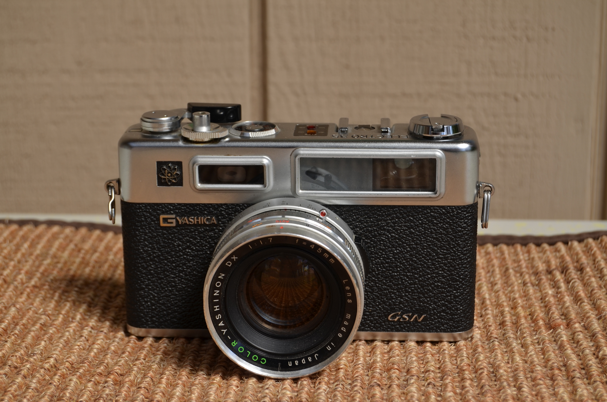

About Italy:
Italy is a country in Southern Europe, with borders touching France, Switzerland, Austria and Slovenia. It is in the middle of the Mediterranean Sea, and contains two independent countries inside it's borders: San Marino and the Vatican City. There are many incredible cities to visit where you can see historic landmarks, go to beautiful museams and eat some of the best food you will ever encounter.
Amalfi Coast
The Amalfi Coast is located in the Campania region of southern Italy, right on the west coast. The stretch of coast is a beautiful tourist attraction due to the geography and town of Amalfi.
Florence:
Florence is located near central Italy. It is the capital of the region of Tuscany, and is the city where the famous and powerful Medici family resided. It is considered to be the birthplace of the Renaissance. Important landmarks include the Ponte Vecchio, the Duomo, and Michelangelo's David.
Rome:
Rome is the capital city of Italy, located in the Lazio region of central Italy. It includes the smallest country in the world, the Vatican City, Rome also has landmarks such as the Spanish Steps, and the famous Colosseum.
The Vatican City:
The Vatican City is the smallest country in the world, and only shares a border with Italy. It is the home of the Pope and tons of Catholic landmarks such as the Sistene Chapel, St. Peter's Basilica, and the Vatican Museums.
Important Things to Bring
- Camera
- Water Bottle
- Backpack
- Raincoat
- Your Passport

Photo Gallery
Photos
Amalfi Coast
The Amalfi Coast is located in the Campania region of southern Italy, right on the west coast. The stretch of coast is a beautiful tourist attraction due to the geography and town of Amalfi.
Florence:
Florence is located near central Italy. It is the capital of the region of Tuscany, and is the city where the famous and powerful Medici family resided. It is considered to be the birthplace of the Renaissance. Important landmarks include the Ponte Vecchio, the Duomo, and Michelangelo's David.
Rome:
Rome is the capital city of Italy, located in the Lazio region of central Italy. It includes the smallest country in the world, the Vatican City, Rome also has landmarks such as the Spanish Steps, and the famous Colosseum.
The Vatican City:
The Vatican City is the smallest country in the world, and only shares a border with Italy. It is the home of the Pope and tons of Catholic landmarks such as the Sistene Chapel, St. Peter's Basilica, and the Vatican Museums.
Important Things to Bring
- Camera
- Water Bottle
- Backpack
- Raincoat
- Your Passport